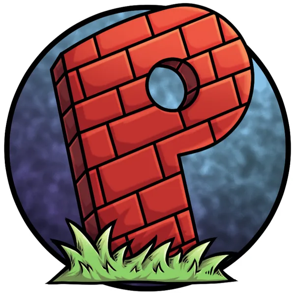
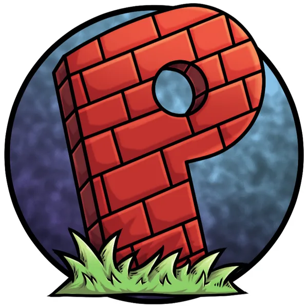

Hemiferiov2, naruto dominicano y parodiadera estos son los primeros pioneros en la
historia de youtube en comenzar ha hacer parodias en la Republica Dominicana,
siendo
los mejores ya que eran los unicos en esos tiempos y aun lo siguen siendo
en mi opinion.
Estos se caracterisan por un humor muy fuerte y no ato para sensibles pero eso es
lo que los
caracteriza, ya que al publico en cuestion lo que le agrada es el humor
que se tenia en tiempos pasados,
algunas fraces mas conocidad en esos canales son
“fritura verde”, “te va deja”, “el singon”, “lo va a romper”,
“inculto” entre otros.
 parodiadera

parodiadera

| canal | seguidores |
|---|---|
| NarutoDominicano | 395k |
| hemiferiov2 | 100k |
| parodiadera | 500k |